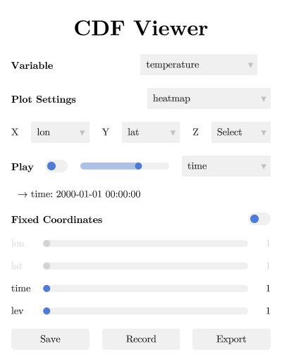

The Menu Window
Everything in CDFViewer can be controlled from two places: the command REPL in the terminal, and a menu window with dropdown menus, sliders, and buttons. The two are always in sync — selecting a variable at the prompt updates the menu, and vice versa. Use whichever fits your workflow; they are two views of the same state.
The menu window is hidden by default. Open it with the menu command, close it with hidemenu, or start the application with the --menu flag to show it right away. The related commands show and hide control the figure window instead.

From top to bottom:
- Variable — the data variable to plot, one entry per variable in the dataset (the
vcommand). - Plot Settings — the plot type (
p). The list is filtered to the types that match the number of selected axes. The text box below takes plot keyword arguments, exactly like typing them at the prompt — see Customizing Plots. - X / Y / Z — assign dataset dimensions to the plot axes (
x,y,z). - Play — animate a dimension: the toggle starts and stops playback, the slider controls the speed, and the dropdown selects the dimension to animate. The value label below shows the current coordinate value of the animated dimension. See Animation and Playback.
- Fixed Coordinates — one slider per dimension that is not on a plot axis (the
isel/selcommands). The toggle on the right controls whether the plot updates live while dragging a slider — turn it off for large datasets where every update is expensive. - Save / Record / Export — write the current figure to an image, record an animation to a video, or print a command line that reproduces the session. The text box takes output options such as
filename="output.png"— see Saving and Recording.
In the figure window, press Ctrl-I to toggle the interpolation of unstructured variables — see Unstructured Grids.